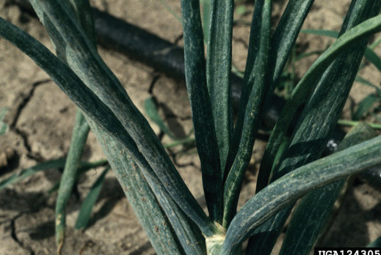
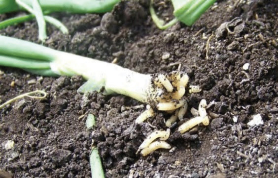
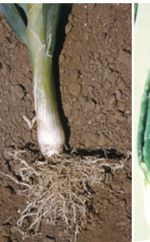
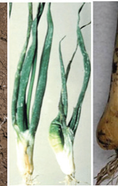
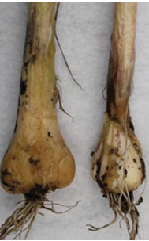

Managing other pests and diseases in onions
Onions are commonly attacked by thrips, onion maggots and nematodes. They are also affected by diseases such as purple blotch, onion bacterial soft rot, downy mildew and onion black mould.
Onion thrips
What they do: Suck the juice from plants. How to know them: You can see leaves that are shiny and have spots (refer to Figure 7.3). How to manage them: Rotate the type of crop you grow, and use recommended pesticides.

Onion maggots
What they do: Eat the side roots of onion plants. How to know them: You can see small white worms, affected plants that look like they are shrinking or dying (refer to Figure 7.4) How to manage them: Change the type of crop, use manure or compost, and clean the field.

Nematodes
What they do: Attack the roots or stems of onion plants. How to know them: You can see plants with deformed roots or stems, and some tiny balls in the soil (refer to Figure 7.5). How to manage them: Use special pesticides during farm preparation.


